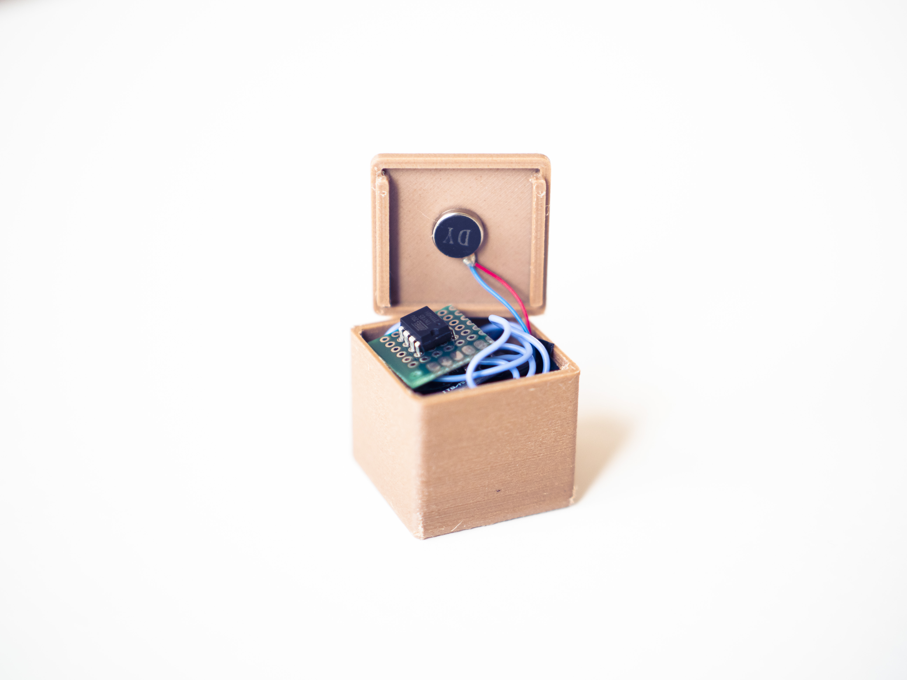
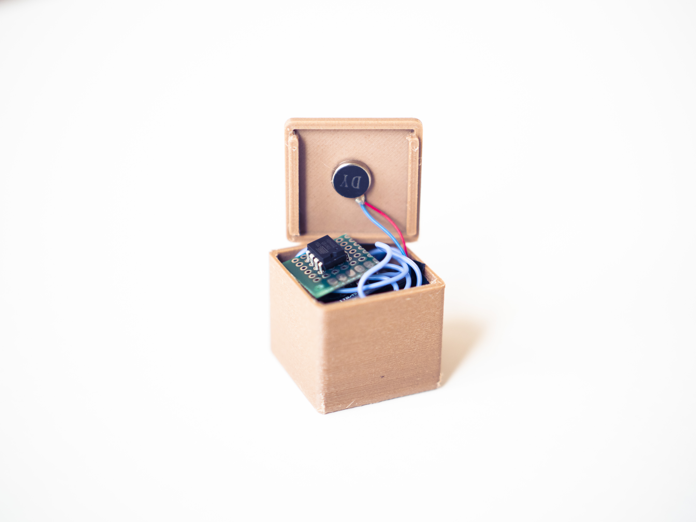
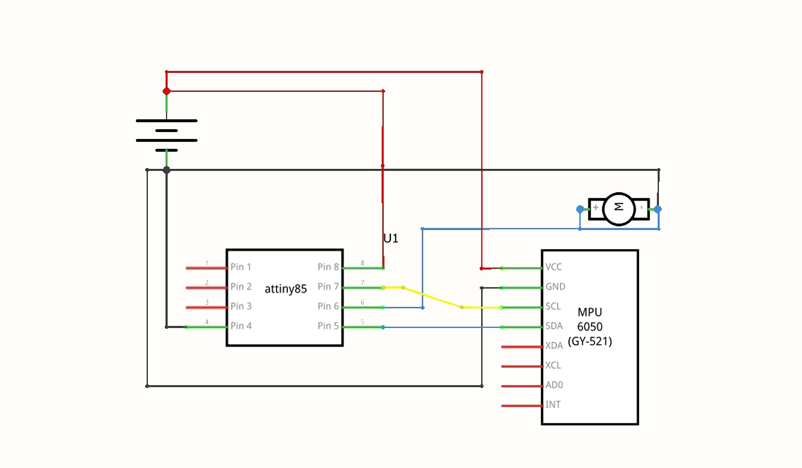
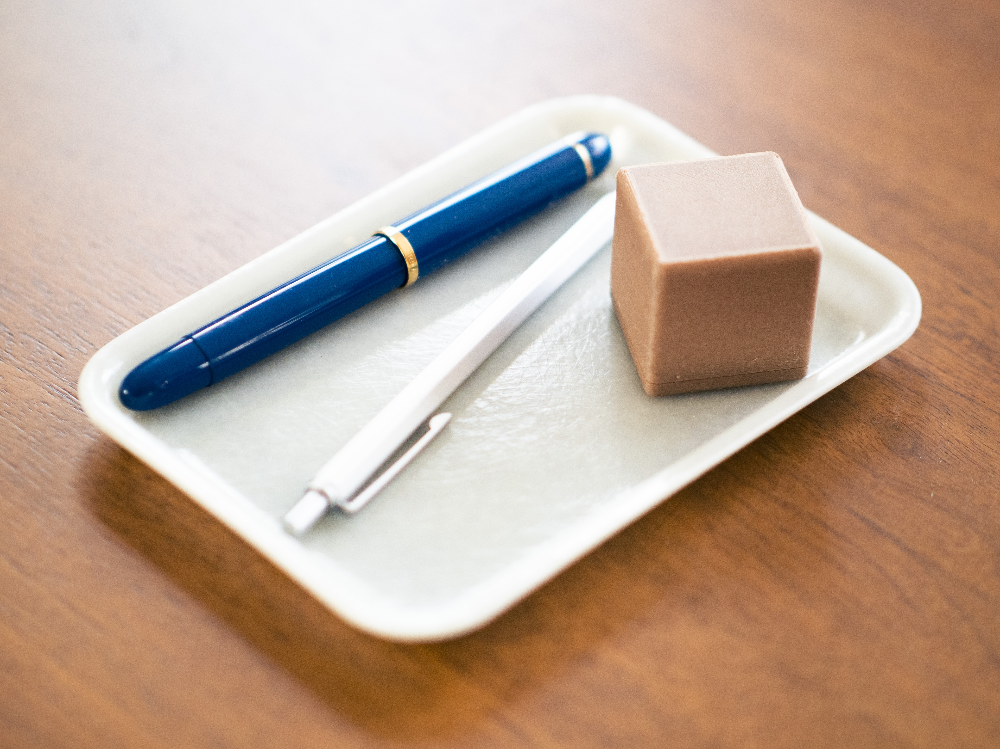
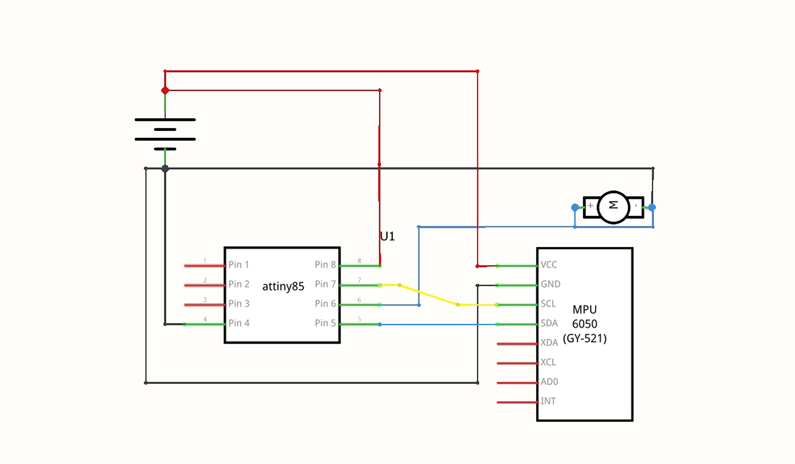
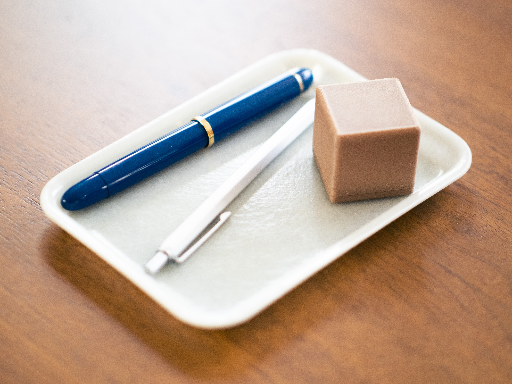

Bee
Productivity Timer
The Bee is a high-tech, low-tech interactive timer that keeps you accountable for work while creating distance from technological distractions. The timer is shake-activated: each shake adds 10 minutes, when the time is up the Bee vibrates. The simple cube form helps to keep you focused and undistracted so you can be attentive to what matters.
The Bee uses a 6-axis accelerometer and gyroscope to detect each shake so time can be added to the counter. Once the time is up, a small vibration motor within the cube is activated. The brain of the device is an ATTINY 85 which has been coded using the Arduino platform. The prototype 3D printed using a bamboo and PLA filament blend, giving the Bee a distinct texture and look.
 

 


